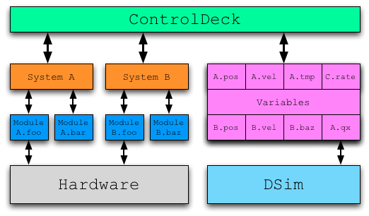

ControlDeck is an object-oriented control system framework. In contrast to DSim, however, it is not hierarchical; the structure of modules is somewhat different. However, just as DSim has models, ControlDeck has modules. Just as DSim models are subclasses of a DSim framework class, ControlDeck modules are created by producing subclasses of a ControlDeck class: cd_control_module.
In ControlDeck terminology, the word module refers to both the class (what would be called the model in DSim) and an instantiation of that class (what would be called the object in DSim). Also, ControlDeck refers to the ControlDeck library, but a "control deck" refers to a specific set of systems and modules described by a setup file.
ControlDeck is organized into a three-level structure. At the top is the ControlDeck framework itself; only one of these exists, and user code does not interact with it directly. Below that are groupings known as Systems. Systems are purely organizational; they don't actively do anything other than contain modules. Modules are instantiated within Systems; each Module is in exactly one System. It is possible, though not particularly useful, for a System to have no Modules within it.
Modules create variables of various types. Variables, once created, are entirely separate from the module that created them: they exist in a separate block, not in any specific module or system. These variables are created and are uniquely identified by a group and name. In most cases, the group of a variable will be the same as the name of the System within which the module that created the variable is located. For example, if a module in system A creates a variable with the name pos, that variable will generally be in the group A. This allows multiple instantiations of the same module to create variables that are unique- if they all attempted to create variables in a hard-coded group, any instantiations after the first would fail.
It's important to note that this rule does not need to be followed. For instance, ControlDeck can manage a DSim simulation to provide data to the control system. In this case, DSim variables are mapped into ControlDeck variables within specific groups. Also, variables can be created with an explicit group (that needn't match any System name). In this case, multiple instantiations of the creating module would need to take care to not attempt to create multiple copies of the variable. This sort of nonstandard usage can be useful to allow modules in different Systems to communicate without worrying about System names.
When hardware is in the loop, individual ControlDeck modules will handle interactions with that hardware. Because the source of individual variables is unimportant to other modules wishing to make use of the variables, it is easy to gradually move from simulated to real hardware: as hardware is added into the loop, the variables representing that hardware in the simulation are removed from mapping, and instead a ControlDeck module interfacing with that hardware is written that creates variables with the same group and path. Other modules can interact with either simulated or "real" variables without any changes.
Because ControlDeck assigns no default semantic meaning to Systems, the meaning of grouping modules is up to the developer of the control deck. In some instances, each System might contain the entire control system of a separate vehicle. For instance, when providing a control system for a constellation of satellites, each System might control one satellite. However, a single object's control system could be broken out over several Systems- eg, Propulsion, Telemetry, etc. In this case each System represents some distinct subsystem.
Just as DSim simulations are described by DS2 files, control decks are described in control deck setup files. Because of some recent feature upgrades for ControlDeck, there are two types of setup files that you might encounter: .txt and .xml. The .txt files are an older ControlDeck setup file format, and are written by hand; you can see the API documentation for the cd_control_deck constructor for information on its format. The .xml files are newer and are created by the ControlDeck Manager application. While they can be edited by hand, working with the ControlDeck Manager application is safer and easier.
Just as with DSim Manager, the ControlDeck Manager provides a "manifest" list of modules that can be added to the control deck that is being edited. The ControlDeck Manager will display all the variables being created and used by the modules within the control deck, allowing you to ensure that all require data is being provided. The manager also allows you to set up a simulation to be run in DSim by ControlDeck, and to map variables from that simulation onto ControlDeck variables.
See the ControlDeckManager application help for more information on using the utility to build setup files.
ControlDeck provides tight integration with DSim. A control deck can have an associated simulation file; when it does, ControlDeck will run in "simulation mode". When running in simulation mode, ControlDeck will automatically handle stepping through the simulation, and will emit simulation step events after each simulation step. In addition, the simulation time will be used instead of the host computer's clock time, and will be used for any installed timers. The setup file can also specify mappings of variables inside the DSim simulation to specific ControlDeck variables: in this way, the simulated variables will appear to ControlDeck modules as if they were created by any other ControlDeck module. The variables can be mapped in with arbitrary groups and names.
In DSim, there is the concept of the "timestep", that interval of simulated time over which variables are integrated and updated. Everything happens at defined timestep intervals. ControlDeck, on the other hand, is designed for real-time control systems where a timestep is not appropriate. Instead, ControlDeck has the concepts of timers and events.
Individual modules can request that ControlDeck notify them after a certain time period has passed. This allows them to go to sleep, waking up only on a pre-defined schedule to perform work. For instance, a module might request to be notified every half-second to perform some particular control work. Timers can be set on a per-module basis, and the only limitation is based on the hardware's timer granularity. This is typically at the millisecond level. It is quite possible for module A to request a timer every 300 milliseconds, and module B to request a separate timer at a 5 second interval. An individual module can even have multiple timers active at once, if different jobs require different sequencing; the module will be woken up separately for each job, and a unique code is provided so that the module knows what timer has been fired. For more information on timers, see cd control module::request timer(double,int) in the ControlDeck API documentation.
Modules can also request to be notified when events are triggered. An event is uniquely identified by a group and name, just as with a variable; also like a variable, the group defaults to the name of the module's system. A particular module triggers the event by specifying the group and name of the event to trigger; all other modules that have requested notification for that event are then woken up to respond to it. It is important to note that the module triggering the event will block (not continue working) until all other interested modules have responded to the event. It is also important to note that if multiple modules have requested notification of a single event, the order in which they will respond to that event is nondeterministic and cannot be relied upon. If modules must act in a specific order, there are two options:
Either option is acceptable, but the second is generally easier to maintain and can be slightly more performant.
ControlDeck provides only one built-in event: the simulation update event (accessible using the group name CD_SYSTEM_GROUP and event name CD_SIMULATION_STEP_EVENT; no quotes as these are macros). This event is triggered after each timestep when ControlDeck is running a DSim simulation for providing data. It is generally a bad idea to use this event: use a timer instead, so that when the control system migrates to working with real hardware no changes need be made (this event will never be sent if no simulation is associated with the control deck).
It's very important to note that ControlDeck does not run code unless some module is responding to an event or a timer. Therefore, it is generally necessary that at least one module have installed a timer; otherwise no code will ever run.
The exception to this is when modules use background processing; background threads may be running even if no main module threads are actively responding to timers or events, and main modules may be woken up when a background thread completes. See the ControlDeck API for more information on background threads.